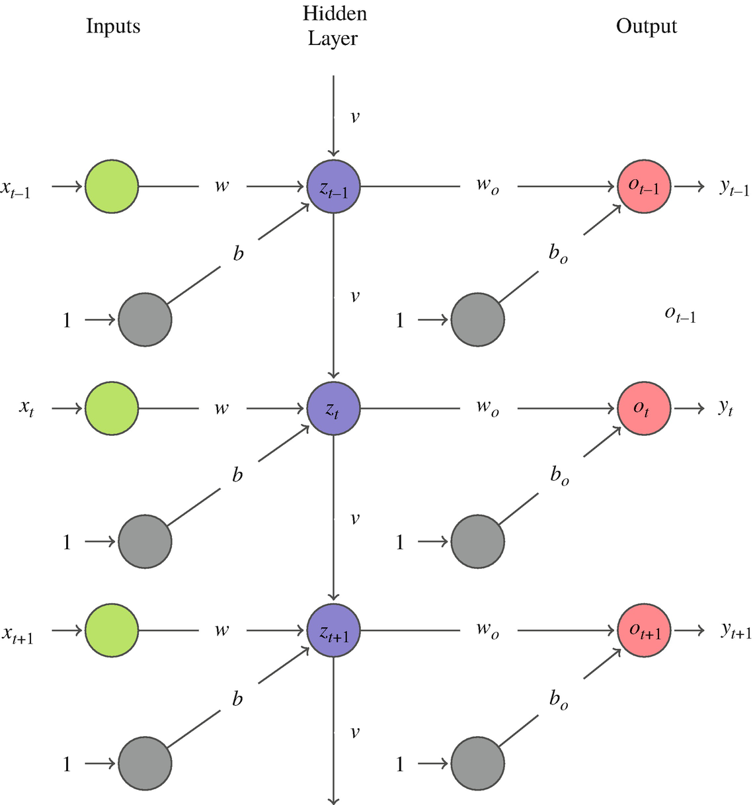
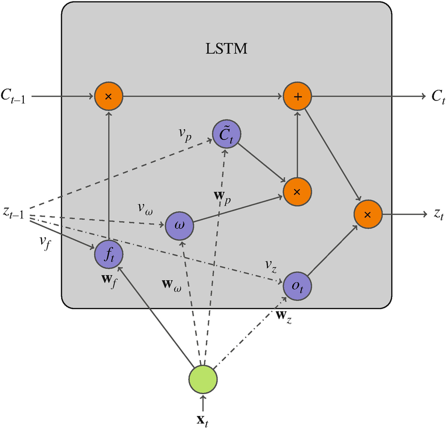
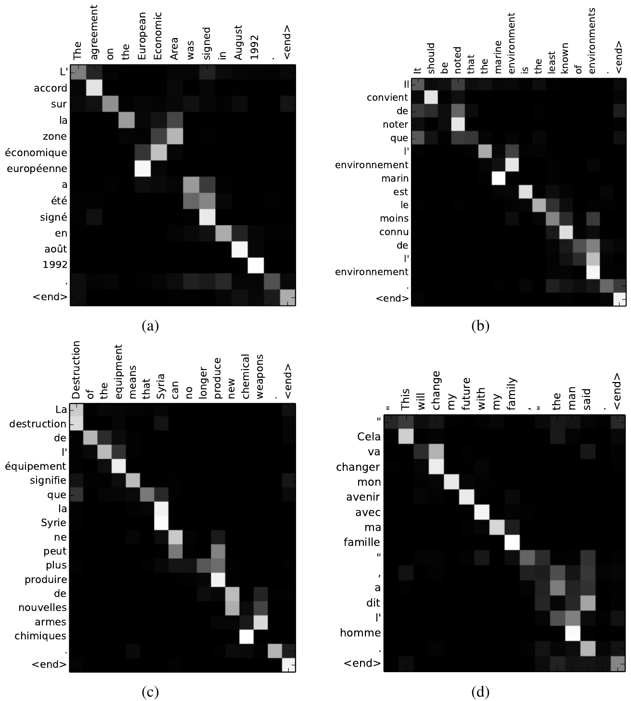
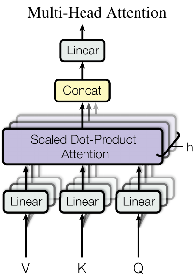
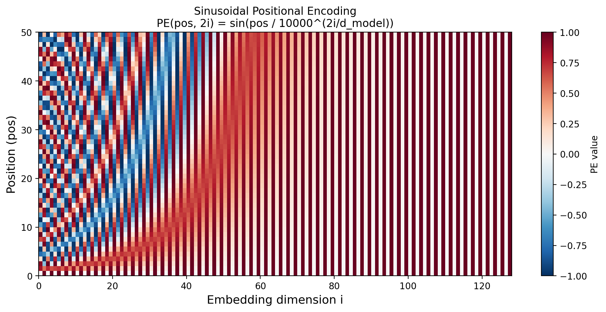
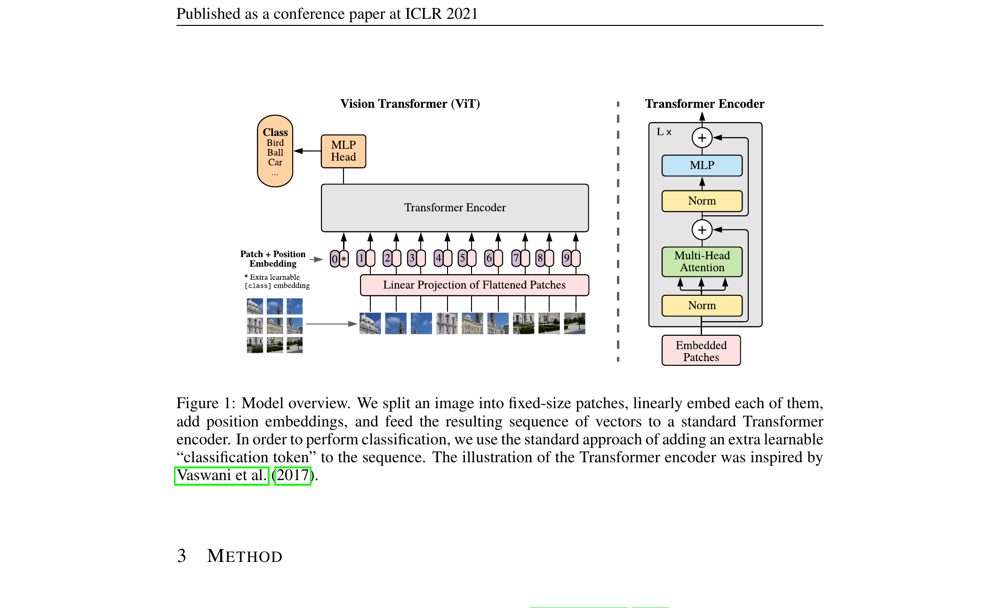
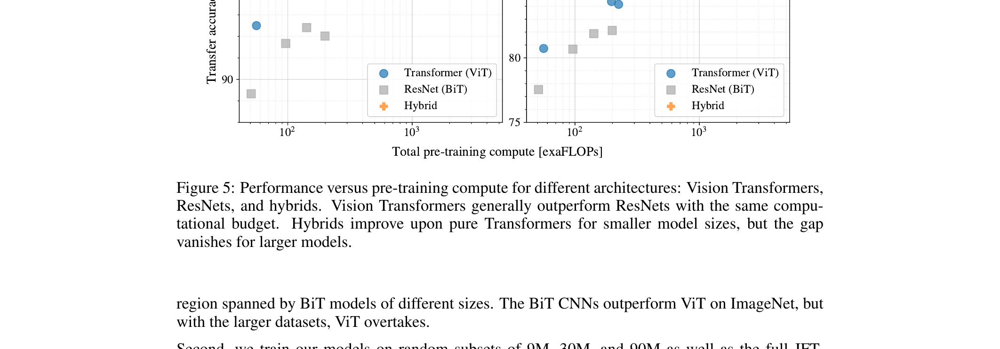
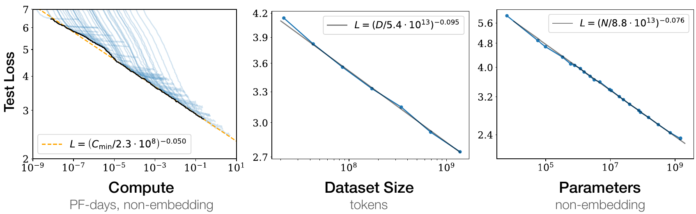

Mathematical Foundations of AI & ML
Unit 10: Attention & Transformers
FAU Erlangen-Nürnberg


Where we are in the course
Behind us:
- Unit 4: convolutional networks. Locality + weight-sharing as a built-in prior.
- Unit 9: pre-trained encoders produce useful embeddings.
- We praised “the encoder” without asking what it actually is.
Today (Unit 10):
- Open the encoder. Today’s answer to “what is the encoder?” is almost always: a transformer.
- Self-attention as content-based addressing.
- Why transformers replaced CNNs/RNNs as the default modern architecture.
- Vision Transformer (ViT) for materials data.
Why this unit matters in 2026
- Every modern foundation model is a transformer: GPT (text), BERT (text), ViT (images), DINO (self-supervised vision), CLIP (multimodal), AlphaFold-2 (proteins).
- Materials work increasingly uses transformers: composition tokens, micrograph patches, spectra sequences.
- A 2026 ML practitioner who can’t read transformer code is professionally limited.
- Today is the missing piece in the original course plan.
Recap: CNNs encode a prior
- A CNN layer assumes:
- Locality: nearby pixels matter most.
- Translation equivariance: a feature shifted in input shifts the same way in output.
- Weight sharing: the same kernel is applied everywhere.
- These assumptions are inductive biases — they bake in human knowledge about images.
- Cost: when these assumptions are wrong, CNNs hit a ceiling.
When CNN locality fails
- Long-range dependencies: a defect in one corner of a micrograph correlates with grain structure on the other side.
- Sets: composition fractions are a set of (element, fraction) pairs — order doesn’t matter, but interactions do.
- Sequences with arbitrary range: SMILES strings, XRD peaks, spectra interpreted as sequences.
- Graphs: molecular bonds — neighbors aren’t defined by spatial proximity.
For all of these, locality is the wrong inductive bias. We need a layer where any position can attend to any other.
Before transformers: Recurrent Neural Networks
The sequence problem:
- CNNs fail on sequences — no notion of “time” or “long-range” order.
- RNNs added a recurrent loop: the output of a neuron feeds back as its own input at the next time step.
- The network state \(z_t\) carries a “memory” of the past.
- Used for time series, speech, NLP throughout the 2010s.

RNNs unrolled through time
- “Unrolling” repeats the RNN block for each time step, revealing the chain of connections.
- Information flows left to right — early inputs can influence late outputs.
- Problem: the gradient of the loss w.r.t. early weights involves \(v^T\) — for large \(T\), this vanishes (or explodes). This is the vanishing gradient problem.

Types of feedback in recurrent networks
- (a) Direct feedback: output of a neuron feeds back to itself — the basic RNN loop.
- (b) Lateral feedback: output of a neuron feeds into a neighbor in the same layer.
- (c) Indirect feedback: output of a neuron feeds into a layer upstream.
- Each type enables different memory structures.

Long Short-Term Memory (LSTM)
LSTM adds a separate “state” track \(C_t\) — a long-term memory highway:
- Forget gate: decides what fraction of the old state \(C_{t-1}\) to keep (\(f_t \in [0,1]\)).
- Input gate: proposes a new state \(\tilde C_t\) and a weight \(\omega\) for how much to add.
- Output gate: produces \(z_t\) by applying an activation to the new state.
- The state \(C_t\) flows with additive updates — gradients no longer vanish exponentially.

LSTM signal flow (gate view)
- At each time step, two quantities flow forward: the memory \(m\) (state) and the hidden state \(h\).
- The three gates (forget, update, output) act as learned valves on this flow.
- The forget gate clears irrelevant history; the update gate writes new information; the output gate reads the result.
- LSTMs dominated NLP benchmarks from ~2014 to 2017.

Why RNNs/LSTMs were replaced
- Sequential computation: RNNs cannot be parallelized over time steps — slow on GPUs.
- Limited range: even LSTMs struggle with very long-range dependencies (hundreds of tokens).
- Fixed bottleneck: the whole past is compressed into one hidden state vector — an information bottleneck for long sequences (the seq2seq problem).
- Transformers solve all three: parallel (all positions at once), full context (any position attends to any other), no bottleneck (attention directly reads all positions).
This is why the transformer title “Attention is All You Need” is provocative: attention replaces the recurrence entirely.
Learning outcomes
By the end of this unit, students can:
- Explain when CNN locality is the wrong prior.
- Derive scaled dot-product self-attention as content-based addressing.
- Trace an attention computation by hand for a small sequence.
- Sketch a transformer block: attention + MLP + residual + LayerNorm.
- Describe Vision Transformer (ViT) as “transformer on patch sequences.”
- Explain why scaling drove transformer dominance.
Roadmap of today’s 90 min
- From CNN to attention (~7 min) — motivating the new layer.
- Self-attention as soft dictionary lookup (~13 min) — the intuition.
- The scaled dot-product formula (~10 min) — the math.
- Multi-head attention (~10 min) — parallel subspaces.
- Positional encoding (~10 min) — restoring order information.
- The transformer block (~10 min) — putting it together.
- Architecture variants (~7 min) — encoder-only, decoder-only, encoder-decoder.
- Vision Transformer (~13 min) — transformers on images.
- Foundation models (~7 min) — why scaling won.
- Wrap (~3 min)
The motivating question
- A CNN says: “every position should be combined with its spatial neighbors.”
- An MLP says: “every position should be combined with every other position (with a fixed weight).”
- What if the combination weights were learned per input?
- That is the core idea of attention: weights that depend on content, not just position.
Soft dictionary lookup
- A regular Python dict:
d["key"] → value. Match must be exact. - A soft dictionary: any query matches every key, with similarity-weighted strength. The result is a weighted average of values.
- Self-attention is a soft dictionary lookup over the input itself.
For each query, return \(\sum_i \mathrm{similarity}(\text{query}, \text{key}_i) \cdot \text{value}_i\).
Self-attention — the players
For each position \(i\) in a sequence of length \(n\) with embeddings \(x_i \in \mathbb{R}^{d_{\text{model}}}\), compute three vectors:
- \(q_i = W^Q x_i\) — the query: “what am I looking for?”
- \(k_i = W^K x_i\) — the key: “what do I offer for matching?”
- \(v_i = W^V x_i\) — the value: “what would I contribute if matched?”
\(W^Q, W^K, W^V \in \mathbb{R}^{d_k \times d_{\text{model}}}\) are learned projection matrices.
Self-attention — the computation
For each query \(q_i\):
- Score against every key: \(s_{ij} = q_i^T k_j\).
- Normalize via softmax: \(\alpha_{ij} = \mathrm{softmax}_j(s_{ij})\).
- Weighted sum of values: \(z_i = \sum_j \alpha_{ij} v_j\).
The output \(z_i\) is a content-weighted blend of all values in the sequence.
Hand-traced example: 4 tokens
Sequence: tokens \(A, B, C, D\) with \(d_{\text{model}} = 2\).
After applying \(W^Q, W^K, W^V\) (small toy values):
| Q | K | V | |
|---|---|---|---|
| A | (1, 0) | (1, 0) | (10, 0) |
| B | (0, 1) | (0, 1) | (0, 10) |
| C | (1, 1) | (1, 1) | (5, 5) |
| D | (1,-1) | (1,-1) | (3,-3) |
Hand-traced example: query A’s output
Compute \(s_{A, \cdot} = q_A^T k_j\):
- \(q_A^T k_A = (1,0)\cdot(1,0) = 1\)
- \(q_A^T k_B = (1,0)\cdot(0,1) = 0\)
- \(q_A^T k_C = (1,0)\cdot(1,1) = 1\)
- \(q_A^T k_D = (1,0)\cdot(1,-1) = 1\)
Softmax of \((1, 0, 1, 1)\) ≈ \((0.31, 0.11, 0.31, 0.31)\). So \(A\) attends mostly to \(A\), \(C\), \(D\).
\(z_A = 0.31 \cdot v_A + 0.11 \cdot v_B + 0.31 \cdot v_C + 0.31 \cdot v_D\).
Self-attention — the matrix view
Stack queries, keys, values into matrices:
\[ Q = X W^Q \in \mathbb{R}^{n \times d_k}, \quad K = X W^K \in \mathbb{R}^{n \times d_k}, \quad V = X W^V \in \mathbb{R}^{n \times d_v}. \]
All scores at once: \(S = Q K^T \in \mathbb{R}^{n \times n}\). Each row is one query’s scores against all keys.
Output: \(Z = \mathrm{softmax}(S) V \in \mathbb{R}^{n \times d_v}\).
What does the attention matrix tell us?
- \(\mathrm{softmax}(S) \in \mathbb{R}^{n \times n}\): each row sums to 1.
- Entry \((i, j)\) is “how much position \(i\) pays attention to position \(j\).”
- Visualizing this matrix is one of the most useful interpretability tools in modern ML.
- For a ViT classifying a defect: the attention map shows which image patches the model used.

The scaled dot-product formula
The full self-attention layer:
\[ \boxed{\,\mathrm{Attention}(Q, K, V) = \mathrm{softmax}\!\left(\frac{QK^T}{\sqrt{d_k}}\right) V.\,} \]
The only difference from what we just derived: the scaling factor \(\sqrt{d_k}\).

Why \(\sqrt{d_k}\)?
- Without scaling: as \(d_k\) grows, \(q_i^T k_j\) has variance proportional to \(d_k\) (sum of \(d_k\) products).
- Large variance scores → softmax saturates → gradients vanish on most entries.
- Dividing by \(\sqrt{d_k}\) keeps the variance constant, so the softmax stays in its responsive range.
- For typical \(d_k = 64\): divide by 8. Small detail, big effect on training.
Geometric intuition
- \(q_i^T k_j\) is large when \(q_i\) and \(k_j\) point in similar directions.
- After softmax: each query “votes” for the values whose keys align with it.
- The output \(z_i\) is a similarity-weighted average of \(V\) — geometrically, a centroid biased toward aligned keys.
- All operations are differentiable, so the projection matrices learn to make the right keys align with the right queries for the task.
Masking (briefly)
- Before softmax, set selected scores to \(-\infty\).
- Causal mask: position \(i\) may not attend to positions \(j > i\). Used in autoregressive models (GPT-style).
- Padding mask: ignore padding tokens that don’t correspond to real input.
- A “decoder” layer is just a self-attention layer with a causal mask.
Why one head is not enough
- A single attention head produces one weighted average per position.
- Often we want to attend to multiple things at once — for a defect classifier, maybe one head focuses on shape, another on texture, another on spatial context.
- Solution: run several attention layers in parallel, with different learned projections.
Multi-head attention — definition
For each head \(i = 1, \ldots, h\):
\[ \mathrm{head}_i = \mathrm{Attention}(Q W_i^Q, K W_i^K, V W_i^V), \]
with each head’s projection matrices independent. Concatenate and project:
\[ \mathrm{MultiHead}(Q, K, V) = \mathrm{Concat}(\mathrm{head}_1, \ldots, \mathrm{head}_h) W^O. \]

Multi-head — sizes that work
Standard recipe (Vaswani et al. 2017):
- \(d_{\text{model}} = 512\), \(h = 8\), \(d_k = d_v = d_{\text{model}} / h = 64\).
- Each head’s projection: \(\mathbb{R}^{d_{\text{model}}} \to \mathbb{R}^{d_k}\).
- Concatenated output: \(h \cdot d_v = 512 = d_{\text{model}}\). Same shape going in and out.
- Total compute: roughly the same as a single full-width attention.
What different heads attend to
- Trained transformers often develop specialized heads:
- Some heads attend strictly to the previous token.
- Some attend to syntactically related tokens (in language).
- Some attend uniformly (a “summarize” head).
- For ViT on materials micrographs: heads can specialize to texture, shape, grain boundary structure.
- Visualizing per-head attention is a common interpretability practice.
Attention is permutation-equivariant
- Suppose we shuffle the input tokens.
- All Q, K, V vectors are computed from individual tokens — no positional information.
- The attention operation doesn’t care about order: the output is the same set of vectors, just reordered.
- For language and sequences, order matters. “Dog bites man” ≠ “Man bites dog.”
We need to inject positional information explicitly.
Sinusoidal positional encoding
For position \(\mathrm{pos}\) and embedding dimension \(i\):
\[ \mathrm{PE}(\mathrm{pos}, 2i) = \sin(\mathrm{pos} / 10000^{2i/d_{\text{model}}}), \] \[ \mathrm{PE}(\mathrm{pos}, 2i+1) = \cos(\mathrm{pos} / 10000^{2i/d_{\text{model}}}). \]
Add \(\mathrm{PE}\) to the token embeddings before the first attention layer: \(\tilde x_i = x_i + \mathrm{PE}(i, \cdot)\).
![Sinusoidal positional encoding matrix for 50 positions and 128 dimensions. Low dimensions oscillate rapidly (fine-grained position); high dimensions change slowly (coarse-grained). Each row is a unique positional fingerprint. (Generated locally.)]

Why sinusoidal works
- Different frequencies → each position has a unique “fingerprint” across embedding dimensions.
- Properties:
- Bounded: PE values stay in [-1, 1], so they don’t dominate the token embedding.
- Generalizes: PE for position \(\mathrm{pos} + k\) is a linear function of PE at \(\mathrm{pos}\) — the model can extrapolate.
- Inductive: useful for sequences longer than seen in training.
Learned vs sinusoidal vs RoPE
- Sinusoidal (Vaswani 2017): fixed, generalizes to longer sequences.
- Learned (BERT, ViT): a learned lookup table indexed by position. Simpler, slightly better in-distribution, doesn’t extrapolate.
- Rotary Position Embedding (RoPE) (Su et al. 2021): rotates Q and K vectors by position-dependent angles. Now standard in LLaMA, GPT-NeoX, and most modern LLMs.
For this course: assume sinusoidal or learned. RoPE is for the curious.
The transformer block
x ──┐
├─► LayerNorm ─► Multi-Head Attn ──► (+) ─►
└────────────────────────────────────┘ │
│
┌────────────────────────────────────────┘
│
├─► LayerNorm ─► MLP (2-layer FF) ─────► (+) ─► output
└─────────────────────────────────────────┘Two sublayers: attention (mixes positions) and MLP (transforms each position independently). Each wrapped in a residual connection and LayerNorm.

What each sublayer does
- Attention sublayer: each position pulls in information from other positions. Mixes across positions.
- MLP sublayer: a 2-layer fully-connected net (typically with GELU activation), applied independently to each position. Transforms within positions.
- Residual connections: stable gradients, easier optimization (Unit 5 self-study material!).
- LayerNorm: stabilizes activations, like BatchNorm but along the feature dimension.
Stacking blocks
- Stack \(L\) identical transformer blocks. Typical: \(L = 6\) to \(L = 96\).
- Each layer refines the representation: lower layers tend to capture surface features, higher layers capture more abstract relationships.
- Final layer’s output is the representation used downstream (classification head, generation, etc.).
Three transformer architectures
- Encoder-only (BERT, ViT, DINO): bidirectional attention; takes input, produces representation. Used for classification, retrieval, embeddings.
- Decoder-only (GPT, LLaMA): causal-masked attention; generates tokens one at a time. Used for autoregressive generation.
- Encoder-decoder (original transformer, T5): encoder reads input; decoder generates output, attending to both itself (causal) and encoder output (cross-attention). Used for translation, summarization.
Cross-attention (briefly)
- In encoder-decoder, the decoder’s middle sublayer is cross-attention: queries from the decoder, keys and values from the encoder.
- “Each decoder position decides what to pull from the encoder representation.”
- Used in image captioning, translation, and conditional generation in Unit 11.
Vision Transformer (ViT)
- Take an image. Split it into a grid of fixed-size patches (e.g., 16×16 pixels).
- Flatten each patch to a vector. Apply a learned linear projection to get a token embedding.
- The image is now a sequence of patch tokens. Add positional embeddings.
- Apply a standard transformer encoder. Use the output of a special [CLS] token as the image representation.
That’s it. ViT is “transformer on patches.” No convolutions, no spatial inductive bias.

ViT — patch embedding
For a \(224 \times 224\) image with \(16 \times 16\) patches:
- Number of patches: \(14 \times 14 = 196\).
- Each patch: \(16 \times 16 \times 3 = 768\)-dim.
- Linear projection to \(d_{\text{model}}\) (e.g., 768).
- Sequence length: \(196 + 1\) (the [CLS] token) = \(197\).
The [CLS] token is a learned vector prepended to the sequence. After all transformer blocks, its final representation is used as the image embedding.
This is the same trick BERT uses for sentence classification.
ViT vs CNN — when does ViT win?
- ViT wins: when there is lots of pre-training data (think ImageNet-21k or JFT-300M).
- CNN wins: when training data is limited — locality is a useful prior that ViT has to learn from scratch.
- A common hybrid: pre-train ViT on a huge corpus, fine-tune on your small materials dataset. Best of both worlds.
For materials work: a pre-trained ViT (e.g., DINOv2) frozen + linear probe is often the strongest baseline. (Unit 9 told you this; now you know what’s inside the encoder.)

ViT for materials micrographs
- A pre-trained ViT (DINOv2) embeds 256×256 SEM patches into 768-D vectors.
- For defect classification: train a linear classifier on top of the frozen embeddings. 5,000 labeled examples → 95% accuracy.
- Attention map: shows which patches the model “looks at” — typically defect regions, grain boundaries, contrast transitions.
- This is interpretable in a way CNN feature maps usually aren’t.
ViT attention maps as saliency
- For each transformer block, the attention from the [CLS] token to each patch is a patch-importance score.
- Average across heads or visualize per-head.
- Materials engineers can verify: “the model classified this as a defect, and it was looking at the actual defect.”
- Compare to GradCAM for CNNs — attention maps require no extra computation, no gradient backflow.
Why scaling won
- Transformers scale gracefully: doubling parameters and data gives predictable performance gains (scaling laws — Kaplan et al., Hoffmann et al.).
- Self-attention has no built-in inductive bias — which sounds bad — but means the model is flexible: with enough data, it learns the right priors.
- Hardware loves matmul; transformers are mostly matmul. GPUs and TPUs were designed around them (or vice versa).
- Result: the same architecture, scaled up with more data and compute, kept getting better.

The foundation model recipe
- Pre-train a large transformer on a massive unlabeled corpus.
- Use a self-supervised objective: language modeling (text), masked patch prediction or contrastive learning (images).
- Freeze (or lightly fine-tune) the encoder.
- Reuse it for downstream tasks via embeddings + small heads.
This is the dominant paradigm in 2026. For materials, true domain-specific foundation models are emerging (Materials Project’s MatBench Discovery, MoLFormer for molecules, MaterialsAtlas).
Tokenization (briefly)
- For language: BPE / WordPiece — splits text into subword pieces.
- For images: patch embedding (we just saw).
- For materials: open question. Composition fractions as tokens? Element types? Crystal symmetries?
- Tokenization choice defines what units the model can reason about.
Three exam-must-knows
- Self-attention computes \(\mathrm{softmax}(QK^T / \sqrt{d_k}) V\) — a similarity-weighted average of value vectors, where similarity is content-based (Q vs K dot product). Multi-head runs several attentions in parallel on different learned subspaces.
- A transformer block = multi-head attention + MLP, each wrapped in a residual connection and LayerNorm. Positional encoding is added at input because attention is permutation-equivariant.
- ViT treats an image as a sequence of patch tokens and applies a standard transformer. ViT beats CNNs with enough data; CNNs win with less data because of their locality prior.
Reading and bridge to Unit 11
Note
Reading for Unit 11 (Generative Models: VAE & Diffusion). Skim Kingma & Welling (2013) “Auto-Encoding Variational Bayes” for VAE, and Lilian Weng’s blog post “What are diffusion models?” for diffusion intuition. Murphy (2023) Ch. 28 is the textbook reference.
Unit 11: today’s transformer can be an encoder. What if we want a generator — something that produces new molecules, microstructures, designs? VAEs add a probabilistic latent; diffusion learns to denoise. The U-Net inside Stable Diffusion is, increasingly, a transformer.
Notebook companion + references
Week 10 notebooks (in example_notebooks/ once added)
- Single-head attention from scratch in 10 lines of PyTorch; inspect attention weights on a toy sequence.
- Hand-trace one full attention computation for \(n = 3\), \(d_k = 2\); verify against autograd.
- Tiny ViT on CIFAR-10 or a small materials dataset; compare to a CNN of similar parameter count.
- Pre-trained ViT (DINOv2 from
timmor HuggingFace): attention map visualization on micrographs.
Strongly recommended take-home: Karpathy’s “Let’s build GPT” notebook (nanoGPT). 200 lines, demystifies decoder-only transformers entirely.
Learning outcomes — recap
By the end of this unit, students can:
- Explain when CNN locality is the wrong inductive bias.
- Derive scaled dot-product self-attention as content-based addressing.
- Trace an attention computation by hand for a small sequence.
- Sketch a transformer block: attention + MLP + residual + LayerNorm.
- Describe the Vision Transformer as “transformer on patch sequences.”
- Explain why scaling drove transformer dominance.

© Philipp Pelz - Mathematical Foundations of AI & ML